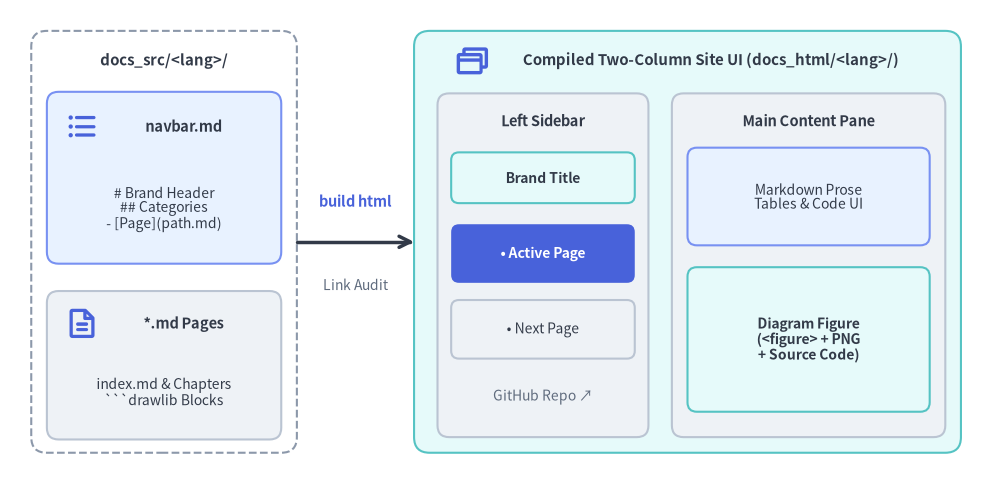
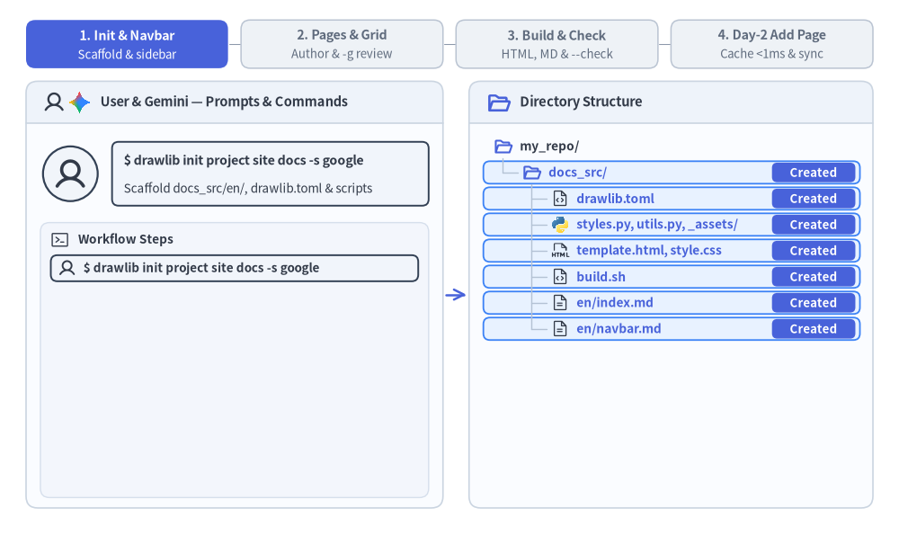

Site Project Guide (drawlib init project site)
The site starter template builds a responsive multi-page technical documentation website with hierarchical sidebar navigation, mobile-responsive layout, syntax highlighting, and dual publishing to static HTML and GitHub-ready Markdown.
Drawlib compiles docs_src/<lang>/navbar.md and your Markdown pages into a two-column documentation portal with strict build-time link validation:

Source Code
from drawlib.canvas import save, setup
from drawlib.icons import phosphor
from drawlib.lines import line
from drawlib.shapes import rectangle
from drawlib.styles import Styles
from drawlib.text import text
setup(width=128, height=62)
# Left: Source directory container
rectangle((21, 31), width=34, height=54, style=Styles.MutedDashed.patch(shape_r=2.0))
text((21, 54.2), "docs_src/<lang>/", style=Styles.DarkBold.patch(text_size=10.8))
rectangle((21, 39.2), width=30, height=22, style=Styles.PrimaryNeutral.patch(shape_r=1.5))
phosphor.list_bullets((10.5, 45.8), width=4.4, style=Styles.PrimaryBold)
text((23.5, 45.8), "navbar.md", style=Styles.DarkBold.patch(text_size=10.5))
text((21, 35.2), "# Brand Header\n## Categories\n- [Page](path.md)", style=Styles.Dark.patch(text_size=10.0))
rectangle((21, 15.2), width=30, height=19, style=Styles.Neutral.patch(shape_r=1.5))
phosphor.file_text((10.5, 20.5), width=4.4, style=Styles.PrimaryBold)
text((23.5, 20.5), "*.md Pages", style=Styles.DarkBold.patch(text_size=10.5))
text((21, 11.8), "index.md & Chapters\n```drawlib Blocks", style=Styles.Dark.patch(text_size=10.0))
# Middle: Compiler step
line((38, 31), (53, 31), arrow_head="->", style=Styles.DarkBold)
text((45.5, 36.2), "build html", style=Styles.PrimaryBold.patch(text_size=10.5))
text((45.5, 25.5), "Link Audit", style=Styles.Muted.patch(text_size=10.0))
# Right: Compiled Two-Column Site UI (docs_html/<lang>/)
rectangle((88, 31), width=70, height=54, style=Styles.SecondaryNeutral.patch(shape_r=2.0))
phosphor.browsers((60.5, 54.2), width=4.6, style=Styles.PrimaryBold)
text((91.0, 54.2), "Compiled Two-Column Site UI (docs_html/<lang>/)", style=Styles.DarkBold.patch(text_size=10.8))
# Left Sticky Sidebar
rectangle((69.5, 28.0), width=27, height=44, style=Styles.Neutral.patch(shape_r=1.5))
text((69.5, 46.5), "Left Sidebar", style=Styles.DarkBold.patch(text_size=10.5))
rectangle(
(69.5, 39.2),
width=23.5,
height=6.5,
style=Styles.SecondaryNeutral.patch(shape_r=1.0),
text="Brand Title",
text_style=Styles.DarkBold.patch(text_size=10.0),
)
rectangle(
(69.5, 29.5),
width=23.5,
height=7.5,
style=Styles.PrimaryFlat.patch(shape_r=1.0),
text="• Active Page",
text_style=Styles.WhiteBold.patch(text_size=10.0),
)
rectangle(
(69.5, 19.8),
width=23.5,
height=7.5,
style=Styles.Neutral.patch(shape_r=1.0),
text="• Next Page",
text_style=Styles.Dark.patch(text_size=10.0),
)
text((69.5, 11.2), "GitHub Repo ↗", style=Styles.Muted.patch(text_size=10.0))
# Right Main Content Pane
rectangle((103.5, 28.0), width=35, height=44, style=Styles.Neutral.patch(shape_r=1.5))
text((103.5, 46.5), "Main Content Pane", style=Styles.DarkBold.patch(text_size=10.5))
rectangle(
(103.5, 36.8),
width=31,
height=12.5,
style=Styles.PrimaryNeutral.patch(shape_r=1.2),
text="Markdown Prose\nTables & Code UI",
text_style=Styles.Dark.patch(text_size=10.0),
)
rectangle(
(103.5, 18.5),
width=31,
height=18.5,
style=Styles.SecondaryNeutral.patch(shape_r=1.2),
text="Diagram Figure\n(<figure> + PNG\n+ Source Code)",
text_style=Styles.DarkBold.patch(text_size=10.0),
)
save()
1. End-to-End Project Workflow
From initial drawlib init project site scaffolding and navbar.md sidebar setup to -g grid inspection, headless link validation (drawlib serve --check), and Day-2 incremental page additions backed by .drawlib/cache.db:

2. Project Initialization
Scaffold a documentation website using drawlib init project (every site project uses the unified <src_dir>/<lang>/ locale layout, even for a single language):
# Scaffold default 'docs_src/en/' in the current directory:
drawlib init project site
# Or specify a custom target prefix and single or multiple locales (creates 'my_docs_src/<lang>/'):
drawlib init project site my_docs --style google --lang en
drawlib init project site my_docs --style google --lang en,ja
3. Directory Layout & Architecture
A site project strictly separates editable source files (docs_src/) from generated publishing artifacts:
docs_src/(Single Source of Truth):drawlib.toml: Project manifest declaringtype = "site",style, and the required[i18n]section (default_lang,langswithlen >= 1, and optional[i18n.labels];langunder[project]is disallowed).<lang>/index.md: Per-locale site landing page rendered as<lang>/index.html(withdocs_html/index.htmlredirecting todefault_lang).<lang>/navbar.md: Per-locale declarative sidebar navigation manifest defining brand title, collapsible sections, and page links.- Nested Section Sub-Folders (
<lang>/guide/,<lang>/api/,<lang>/01_architecture/, etc.): Hierarchical Markdown pages with embedded```drawlibdiagram blocks. _assets/: Static media files (logos, screenshots, data files) recursively mirrored into output portals (referenced from<lang>/Markdown prose via../_assets/...).styles.py&utils.py: Project-wide theme palette, language typography defaults (plus optional per-locale<lang>/styles.pyoverrides), and shared Python drawing helpers.template.html&style.css: Responsive two-column HTML layout shell and 3-layer CSS stylesheet.build.sh,build_html.sh,build_markdown.sh,build_image.sh,serve.sh: Modular build and local preview scripts.
- Generated Outputs (Do Not Edit Directly):
docs_html/: Responsive static HTML documentation portal (docs_html/<lang>/, rootdocs_html/index.htmlredirect, and shareddocs_html/images/) ready for web hosting anddrawlib serve.docs_markdown/: GitHub-ready Markdown portal (docs_markdown/<lang>/and shareddocs_markdown/images/) with compiled PNG/WebP figure links.docs_images/: Standalone extracted illustrations when runningbuild_image.sh.
4. Sidebar Navigation (<lang>/navbar.md)
The sidebar navigation structure for each locale is governed entirely by docs_src/<lang>/navbar.md:
# Drawlib Documentation
- [Home](index.md)
## Core Infrastructure
- [VPC Architecture](01_architecture/vpc.md)
- [Storage Tier](01_architecture/storage.md)
## Microservices
- [Authentication Gateway](02_services/auth.md)
- [Payment Service](02_services/payments.md)
## External Resources
- [GitHub Repository](https://github.com/example/repo)
Authoring Rules:
- Brand Header (
# Title): The top level# Heading 1sets the brand title in the sidebar header. - Category Groupings (
## Category): Each## Heading 2defines a collapsible navigation category section. - Internal Document Links: Relative paths are resolved within that locale directory (
docs_src/<lang>/) and must point to existing Markdown files. - External Links: URLs beginning with
http://orhttps://automatically open in a new tab (target="_blank") with an external link indicator. - Strict Build-Time Validation: If any linked document does not exist, the build immediately aborts with an error indicating the file and line number.
- Active Page Tracking: The currently viewed page is automatically highlighted (
.nav-item.active) with dynamic relative path resolution.
5. Static Asset Synchronization
Any static assets placed in docs_src/ (such as custom logos, sample data files, or images in _assets/) are recursively mirrored to docs_html/ and docs/ (docs_markdown/), preserving folder hierarchies.
6. Building & Local Preview
Compile Site
./docs_src/build_html.sh # Compile HTML site (docs_html/)
./docs_src/build_markdown.sh # Compile Markdown site (docs_markdown/ or docs/)
./docs_src/build_image.sh # Extract standalone images (docs_images/)
./docs_src/build.sh # Run all builds sequentially
Local Preview Server & Link Audit
Start the local development server to preview pages:
uv run drawlib serve docs_html/
Before deploying to production, run a headless pre-flight audit:
uv run drawlib serve docs_html/ --check
7. Parallel Multi-Agent Site Authoring
Multi-page site projects (docs_src/<lang>/**/*.md) scale naturally across parallel AI subagents:
- Phase 1 (Parent Setup): Scaffold
docs_src/(drawlib init project site) and finalize shared files (drawlib.toml,styles.py,utils.py,_assets/,<lang>/index.md, and the complete<lang>/navbar.mdsidebar tree) before launching subagents. - Phase 2 (Parallel Subagents): Assign each subagent a disjoint page or section directory (e.g.,
<lang>/01_architecture/*.mdvs.<lang>/02_services/*.md). Each subagent treatsdrawlib.toml,styles.py,utils.py, and<lang>/navbar.mdas read-only, authors its assigned pages, and runs-ggrid previews using unique scratch filenames (-o .drawlib/scratch/<page>_<block>_grid.png). - Phase 3 (Unified Build & Link Audit): Once all subagents finish, the parent agent runs
./docs_src/build.shonce and verifies site-wide link integrity withuv run drawlib serve docs_html/ --check.
8. Unified i18n & Multi-Language Websites (drawlib.toml)
Every docs_src/ project is i18n-native out of the box (langs = ["en"] by default). Expanding a single-language portal into a multi-language site later requires zero git mv restructuring—pass comma-separated language codes to drawlib init project site or add a locale directory (docs_src/ja/) and update [i18n] in docs_src/drawlib.toml:
uv run drawlib init project site docs -l en,ja -s default
[project]
name = "docs"
type = "site"
style = "default"
[i18n]
default_lang = "en"
langs = ["en", "ja"]
[i18n.labels]
en = "English"
ja = "日本語"
- Symmetric Locale Subtrees (
docs_src/<lang>/): Each configured locale (en/,ja/, ...) maintains its ownnavbar.md,index.md, and mirrored section subdirectories. - Shared Diagram Deduplication & Per-Locale
styles.py: Identical diagrams (file=vpc_arch.png) are compiled once into the rootdocs_html/images/directory and shared across all locales. If a locale requires CJK fonts or localized figure text, adddocs_src/<lang>/styles.pyand use a locale-suffixed filename (file=vpc_arch_ja.png). - Automatic Locale Switcher & Root Redirect: When
len(langs) > 1, compiled HTML pages render a header language dropdown linking directly to the corresponding page in every other locale, whiledocs_html/index.htmlredirects visitors to their preferred locale (default_langfallback). - Pre-Flight Parity Enforcement: Every build automatically verifies file-set parity,
navbar.mdstructure parity, Markdown structural skeleton parity, and internal link targets across all configured locales before rendering. - Unified Link Verification: Running
uv run drawlib serve docs_html/ --checkvalidates internal navigation, shared image references, and cross-locale switcher links across all locales in one pass.
9. Project-Managed SEO, Open Graph & llms.txt (drawlib.toml)
Web-facing Drawlib projects (site, doc, catalog, and slide) can declaratively manage search engine metadata, SNS Open Graph / X (Twitter) preview cards, sitemap.xml, robots.txt, and AI crawler indexes (llms.txt) directly in drawlib.toml without custom post-processing scripts:
[project]
name = "docs"
type = "site"
title = "Drawlib Documentation"
description = "Pure-Python Illustration as Code and Illustrated Documentation as Code library."
style = "default"
[i18n]
default_lang = "en"
langs = ["en", "ja"]
[i18n.labels]
en = "English"
ja = "日本語"
[i18n.descriptions]
en = "Pure-Python Illustration as Code and Illustrated Documentation as Code library for AI agents."
ja = "AI エージェント時代の Illustration as Code・図解ドキュメント生成 Python ライブラリ。"
[seo]
site_url = "https://www.drawlib.com"
og_image = "_assets/ogp.png"
twitter_card = "summary_large_image"
twitter_site = "@handle" # Optional X (Twitter) account handle
sitemap = true # Emit sitemap.xml when site_url is configured
robots = true # Emit robots.txt with Sitemap directive
llms_txt = true # Emit llmstxt.org Markdown index (llms.txt)
- Per-Page
<head>SEO & Open Graph Injection: Automatically extracts each page's opening Markdown summary paragraph (falling back to[i18n.descriptions]and[project].description), emits<meta name="description">,<link rel="canonical">,og:*(og:title,og:description,og:url,og:image,og:locale,og:locale:alternate), andtwitter:*tags, and copies localog_imageassets into<out_dir>/. - Canonical
hreflangUpgrade: Whensite_urlis set,<link rel="alternate" hreflang="...">tags in<head>automatically upgrade to full canonicalhttps://...URLs while interactive UI language switcher links remain relative for offlinedrawlib servepreviews. sitemap.xml&robots.txt: Emits Sitemap 0.9 XML withxhtml:linkmultilingual alternate clusters and a matchingrobots.txtpointing crawlers to<site_url>/sitemap.xml.- AI-Ready
llms.txt(llmstxt.org): Generates a clean Markdown index (docs_html/llms.txt) organized bynavbar.mdcategories (ordocchapters /slidesections) with 1-sentence page summaries and multi-locale entry points for LLM agents.